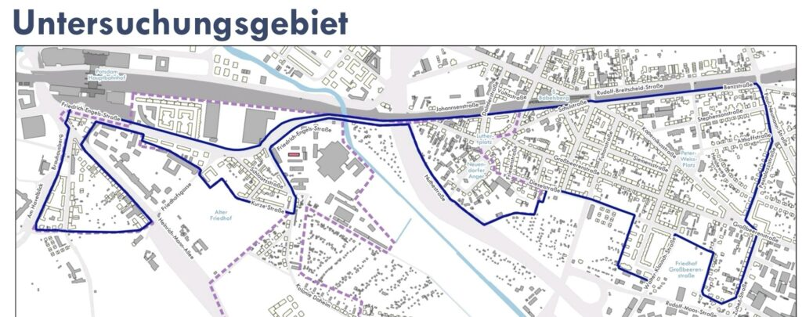

am 15.02.2023 findet die Auftaktveranstaltung zur Fortschreibung des wohnungspolitischen Konzeptes (kurz WoPoK) digital von 17.30 – 19.30 Uhr statt.
EINWAHLDATEN
Zoom-Link (Meeting-ID: 819 7470 7082) Schnelleinwahl mobil – entweder +496950502596, Eingabe 81974707082# (Deutschland) – oder +496971049922 , Eingabe 81974707082# (Deutschland)
Es erfolgt eine Aufzeichnung, die im Nachgang eingesehen werden kann
inhalt der Veranstaltung
Die rasanten und dynamischen Entwicklungen und Anforderungen an den Potsdamer Wohnungsmarkt machen eine Fortschreibung des aktuellen wohnungspolitischen Konzeptes aus dem Jahr 2015 erforderlich. Die aktuellen Geschehnisse sollen analysiert, ausgewertet und interpretiert werden, um im Anschluss Maßnahmen und Anpassungen im WoPoK abzuleiten.
Den Start zu diesem Prozess macht die Auftaktveranstaltung.
Dabei werden neben Anlass und Ziel der Fortschreibung auch die Vorgehensweise und die Zeitplanung präsentiert. Daneben werden die Beteiligungsmöglichkeiten vorgestellt. Zudem werden Hinweise der Teilnehmenden für Dialogforen und Workshops aufgenommen. Es besteht die Möglichkeit, Rückfragen zu stellen.
die Beigeordnete für Ordnung, Sicherheit, Soziales und Gesundheit, Brigitte Meier
Beigeordneter für Stadtentwicklung, Bauen, Wirtschaft und Umwelt, Bernd Rubelt
5 dialogbot*innen gesucht
Wer als eine*r von fünf ausgelost werden will, um sich intensiver einbringen zu können, der/die kann sich als Dialogbot*in bei der LHP bewerben. – Informationen HIER – Anmeldung HIER
weiterer fahrplan
zwei Dialogforen
20. April
5. Juli
Fachworkshops (Teilnahme von Interessierten durch Anmeldung)
Abschlussveranstaltung 23. November
Vorlegen des neuen Konzept im November nach der öffentlichen Präsentation des Abschlussberichtes
anschließend durch Oberbürgermeister in die SVV zur Beschlussfassung eingebracht
Zuletzt wurde im Jahr 2014/15 ein wohnungspolitisches Konzept erarbeitet und am 7. Oktober 2015 durch die Stadtverordnetenversammlung als Orientierungs- und Handlungsrahmen der städtischen Wohnungspolitik beschlossen. Insgesamt sind in dem Konzept 31 Instrumente und Maßnahmen in fünf Handlungsfeldern dargestellt, um die Wohnsituation positiv zu beeinflussen.
Die Fortschreibung des wohnungspolitischen Konzeptes erfolgt durch das Berliner Büro „RegioKontext“ das gemeinsam mit dem Büro „die raumplaner“ von der Landeshauptstadt Potsdam beauftragt worden ist.
heute findet der letzte Tresen für diese Jahr statt. Wir wünschen euch allen ein wunderbares baldiges Weihnachtsfest mit Freunden, Familie oder auch allein mit einer leckeren Tasse Tee.
Bleibt alles schön gesund, gebt aufeinander acht, tut nichts, was wir nicht auch tun würden (Scherz) und noch viel wichtiger: startet gut ins neue Jahr!
Kommt gerne noch einmal auf ein Bier oder einen Schnack vorbei, bevor der Mittwochstresen sich auf’s neue Jahr vorbereitet!
Potsdam verfügt über ein sogenanntes „wohnungspolitisches Konzept“. Also eine Sammlung an Instrumenten und Maßnahmen zur Steuerung des Potsdamer Wohnungsmarktes. Es ist in den Jahren 2014 und 2015 unter breiter Beteiligung verschiedener Wohnungsmarktakteure erarbeitet worden.
Die Mitwirkung erfolgte durch einen Begleitkreis, aus dem anschließend das „Bündnis für bezahlbares Bauen und Wohnen der Landeshauptstadt Potsdam“ hervorging.
Auszug aus einer E-Mail von der Verwaltung: weitere Informationen hier
Der Begleitkreis dient als Austausch- und Diskussionsplattform der aktuelle Fortschreibung des wohnungspolitischen Konzeptes fachlich begleitet. Er besteht im Groben aus Vertreter*innen von:
Mieterverbände
andere zivilgesellschaftliche Interessensvertretungen
wohnungspolitische Sprecher*innen der Fraktionen der SVV
Wohnungswirtschaft
weitere Akteure des Wohnungsmarktes
bedeutung
Dazu zählen also auch zivilgesellschaftliche Akteure, die bisher nicht direkt im Bündnis vertreten waren. Geplant sind fünf Treffen pro Jahr, wobei das erste auf den 23.11.2022 festgesetzt wurde.
Natürlich nehmen wir diese Einladung an, um uns als Anwohner*innen-Initiative Teltower Vorstadt auch hier einbringen zu können.
für die Haushaltsbefragung zur sozialen Erhaltungssatzung beginnen nun die letzten Tage der Beteiligungsmöglichkeit und wir hoffe, dass alle fleißig teilgenommen haben.
Wer noch keinen Umfragebogen erhalten hat kann sich die Online-Codes auch bei Herrn Nader (Stadtverwaltung) noch einfordern.
Abgabeschluss ist der 25.10.2022
Wir danken an dieser Stelle allen Haushalten für die Teilnahme und damit die Chance in Potsdam eine Datenbasis in unserem Viertel zu schaffen, die eine rechtskräftige Analyse für eine Erhaltungssatzung ermöglicht!
aktuell ist der Rücklauf der Umfragen sehr gut – das möchten wir auch weiterhin sicherstellen.
Aufgrund des Auswahlverfahrens kommt es in manchen Haushalten zu einer Mehrfachzustellung, wohingegen andere Haushalte keine Befragungsunterlagen erhalten haben. Das liegt daran, dass im Melderegister wohl etwa 10.000 Menschen jeden Alters im Gebiet gemeldet sind; in der Übersicht der Stadt aber nur etwa 4.800 Haushalte dort liegen.
Hier wurde also versucht anhand der beiden unabhängigen Listen einen Kompromiss zu finden, indem die Anzahl der Haushalte einer Meldeadresse zufällig an die dort gemeldeten Personen verschickt wurden.
Das bedeutet, dass in einem Hausaufgang mit 10 gemeldeten Personen und 6 Haushalten zufällig 6 Personen gewählt wurden, die einen Bogen erhalten haben.
Sollte das bei euch der Fall gewesen sein und ihr mehr als einen Fragebogen erhalten haben, dann fragt gern bei euren Nachbar*innen nach, ob diese keinen erhalten haben. Da die Daten anonym aufgenommen werden könnt ihr alle Seiten des Fragebogens inkl. Karte einfach weitergeben.
So stellen wir gemeinsam sicher, dass möglichst viele Haushalte die Chance erhalten bis 25.10. an der Befragung teilzunehmen.
Wenn ihr auch dann noch keinen Fragebogen erhalten habt und unbedingt einen wollt, dann meldet euch gerne bei office@lpgmbh.de . Dort können noch online-Codes generiert werden, um euch zumindest digital die Möglichkeit der Partizipation zu bieten.
Wir sind als Anwohner*innen-Initiative Teltower Vorstadt nach wie vor mittwochs 19-22 Uhr beim Mittwochstresen im freiLand in Haus 2 für euch da, solltet ihr vor Ort Fragen loswerden wollen. Wir versuchen euch dann so gut wir können weiterzuhelfen.
heute hat um 19 Uhr die Informationsveranstaltung zur Erhebung von Haushaltsdaten südöstlich des Hauptbahnhofes stattgefunden.
Anwesend waren neben der Beigeordneten für Ordnung, Sicherheit, Soziales und Gesundheit (Frau Meier) auch der komm. Fachbereichsleiter für Wohnen, Arbeit und Integration (Herr Jekel), sowie zwei Vertreter der LPG (Landesweite Planungsgesellschaft) mbH (Herr Roland Schröder und Herr Sören Drescher).
Inhalte des Abends
Neben einer allgemeinen Einleitung seitens des Geschäftsbereiches 3 unter Frau Meier folgten eine kurze Beschreibung zur sozialen Erhaltungssatzung, gefolgt von einer technischen Skizzierung des Vorgehens, abgeschlossen mit einer Fragerunde und lockerem Ausklang.
Frau Meier
Potsdam erfährt ein hohes Bevölkerungswachstum, mit gleichzeitig stagnierend niedrigem Leerstand und rückläufigen innerstädtischen Umzügen. Weiterhin driften Bestandsmiete (Mietspiegel) und Angebotsmiete (Internetinserate) weiter auseinander, sodass der Wohnungsmarkt unter Druck steht. Die soziale Erhaltungssatzung soll als ausgezeichnetes Instrument gegen Verdrängungseffekte rechtssicher zum Schutz der Quartierszusammensetzung etabliert werden – und zwar gut gemacht werden.
Herr Jekel
In den 90er-Jahren gab es bereits mehrere soziale Erhaltungssatzungen in Babelsberg, welche jedoch nie vollzogen wurden. Insgesamt lässt sich feststellen, dass aktuell keine gültige, rechtskräftige soziale Erhaltungssatzung Anwendung in Potsdam findet.
Durch den von Frau Meier angesprochenen, angespannten Wohnungsmarkt, bei dem die Nachfrage das Angebot übersteigt und eine zunehmende Homogenisierung der Quartiere stattfindet (Personengruppen sind in bestimmten Vierteln anzutreffen und unterscheiden sich untereinander stark) wird der Schutz dieser noch heterogenen Zusammensetzung zunehmend wichtiger.
Begonnen hat der Anlauf zu dieser sozialen Erhaltungssatzung mit dem Bauvorhaben am RAW-Digitalzentrum unweit der Teltower Vorstadt, welches 2022 in den Baustart übergehen sollte. Hier wurden vermehrt Ängste gegnüber steigender Wohnungsnachfragge und Investitionen in das bestehende Quartier geäußert. Als Konsequenz hat die Stadt darauf mit Wohnungsneubau an der Heinrich-Mann-Allee und dem Auftrag zu einer sozialen Erhaltungssatzung geantwortet, die beide auf das strategische Ziel „bezahlbares Wohnen und Nachhaltige Quartiersentwicklung“ von 2018 der Landeshauptstadt Potsdam einzahlen.
Fahrplan
In 2019 wurde der Auftrag zur Erstellung einer sozialen Erhaltungssatzung erteilt. In 2020 erfolgte daraufhin der Aufstellungsbeschluss, der eine Aussetzung von Bauvorhaben bis zur Erstellung der Satzung erlaubt. Ab 2021 erfolgte dann eine Organisationsuntersuchung der Geschäftsbereiche. Seit 2022 wurden folgende Punkte angegangen:
Q2/2022: Aufsetzung einer vertiefenden Untersuchung
Q3/2022 – Q4/2022: Durchführung der vertiefenden Untersuchung
Q1/2023: Ergebnisse der vertiefenden Untersuchung mit Empfehlungen an die Stadt (Satzung und Begründung)
LPG mbH
Nach einer interaktiven Umfrage ergab sich, dass sehr viele Mieter*innen, eher weniger Vermieter*innen oder Pressemenschen anwesend waren; von diesen haben etwa 75% eher noch nichts von einer sozialen Erhaltungssatzung (SES) gehört.
Die SES dient vorallem dem Vorbeugen einer einseitigen Quartierszusammensetzung und Verdrängungseffkten. Sie soll Stabilität und funktionierende Nachbarschaften fördern, sowie unnötige Investitionen der Stadt mindern (wechselnde infrastrukturelle Anforderungen mit veränderter Zusammensetzung).
Drei Missverstädnisse im Zusammenhang mit einer SES: (1) „ich werde enteignet“ (Eigentümer*in) (2) „jetzt bin ich voll geschützt“ (Mieter*in) (3) „das ist viel Arbeit für nichts“ (Verwaltung)
Das Baugesetzbuch hält an mehreren Stellen fest, dass genau diese Zusammensetzung schützenswert ist (z.B. §1(5)+(6) und §172 BauGB). Ausgenommen von den dort aufgrzählten baulichen Veränderungen sind Aufholarbeiten auf gesetzliche Standards. Das Satzungsgebiet muss hierbei nicht das komplette Untersuchungsgebiet umfassen und kann aus Einfachkeitsgründen ohne parzellen- oder grundstücksgenaue Ausweisung stattfinden. Sie gilt i.d.R. unbegrenzt, wobei nach fünf Jahren eine neue Bewertung des Quartiers die Rechtssicherheit sicherstellen sollte.
Nichts desto trotz sollen durch eine solche Satzung Eigentümer*innen in ihre Sozialpflicht genommen werden, da bauliche Veränderugen dann aufwendiger und nur zum Teil umsetzbar werden. Die Stadt hat dann die Möglichkeit Bauanträge zu versagen und in Verhandlungen mit den Eigentümer*innen zu treten, bis ein genehmigungsfähiger Antrag vorliegt.
Warum nur 5 Jahre gültig? Das ist der Regelfall, da in einem Zeitraum von 5 Jahren konkrete Entwicklungen beobachtet und prognostiziert werden können. Je länger die erneute Evaluation hinausgezögert wird, desto unsicherer wird die SES.
Definition Migrationshintergrund Abfrage, um eine differenzierte Betrachtung des Quartiers zu ermöglichen (Repräsentativität). Es wird keine Definition vorgegeben, sondern auf das Identifikationsgefühl der Bewohner*innen vertraut
Radius der Nutzung von Infrastruktur Diese ist nicht allein auf das Untersuchungsgebiet bezogen. Bei kleinen Untersuchungsgebieten hätte dies zur Folge, dass keinerlei Infrastruktur einbezogen werden könnte. Es geht als mehr um die allgemeine, nähere Wohnumgebung, die man zur Nachbarschaft zählt.
Warum wurde das Gebiet verändert? Große Teile von Babelsberg-Süd haben bereits Sanierungen erfahren, daher ist hier vor allem interessant den Sanierungsstand des Quartiers zu erfahren. Weiterhin ist der Standard von heute nicht ewig aktuell, sodass auch auf sanierte Gebiete weitere Verdrängungseffekte wirken könne, wenngleich nachgelagert.
Verbindungsstelle Friedrich-Engels-Straße Diese könnte, wenn man es als ein Gebiet betrachtet, eine Schwachstelle darstellen. Deshalb würde bei Eignung beider Seiten der Nuthe der Rat klar hin zu zwei Satzungsgebieten gehen.
Baujahr=Baujahr oder =Jahr der Kernsanierung? Das Baujahr kann im Mietspiegel ausgelesen werden, wenn kürzlich eine Mieterhöhung stattgefunden hat. Weiterhin ist für die Erhebung das Baujahr interessant. Der Sanierungsstand kann dann wiederum über Ausstattungsmerkmale (Fenster, Dämmung, …) einbezogen werden.
Gibt es einen Schutz bis zum Satzungsbeschluss? Aufgrund des Aufstellungsbeschlusses 2020 können Bauvorhaben – sofern sie der Verwaltung bekannt sind – zurückgestellt werden, bis eine Satzung vorliegt.
Haushalte ohne und Haushalte mit mehrfach Bögen Sollte ein Haushalt mehrere Bögen erhalten haben, so können die überschüssigen gern an Haushalte ohne Bogen im Untersuchungsgebiet weitergegeben werden, da sie anonymisiert ausgefüllt werden.
Auswahl der Haushalte Anhand des Melderegisters der Stadt Potsdam und einer Mitteilung über die Anzahl der Haushalte einer Anschrift wurde versucht eine Auswahl zu treffen, die möglichst jeden Haushalt einschließt. Bei etwa 10.000 gemeldeten Menschen ergab dies eine Befragungsgröße von etwa 4.800 (Vollbefragung). Sollte kein Bogen zugestellt worden sein (vor allem bei ganzen Aufgängen), so kann die LPG mbH informiert werden, die dann Onlinecodes vergeben kann.
Warum wurde Semmelhaack neben dem RAW aus dem Gebiet genommen? Die Bauten sind noch zu neu (2010), um sinnvoll Investitionen innerhalb der nächsten 5 Jahre absehen zu können. Weiterhin ist der Vermieter für sein Bewirtschaftungsinteresse bekannt, sodass spontane Investitionen unwahrscheinlich sind. Ein Teil des Komplexes beinhaltet weiterhin Seniorenwohnheime, welche als Gewerbe und nicht Wohnraum zählen.
Beinhaltet die Satzung auch Gewerbeschutz? Die SES ist auf Wohnraum ausgelegt. Sollte durch eine Umwandlung in Wohnraum die Zusammensetzung des Viertels bedroht sein wäre ein Einschreiten möglich, jedoch gibt es sonst keine Einflussmöglichkeit.
Woran scheitern SES in Potsdam? Bis dato wurden die SES in Potsdam ohne jedwege Datenerhebung beschlossen und wären somit bei jeglicher Anfechtung gescheitert. Sie beinhalteten damals noch Mietpreisregelungen, die so in dieser Form der Satzung nicht vorgesehen sind.
Seit einer Woche etwa laufen die Haushaltsbefragungen im Untersuchungsgebiet der sozialen Erhaltungssatzung „südöstlich des Hauptbahnhofes“ auf Hochtouren.
Untersuchungsgebiet Stand 09/2022
Inhalt der Informationsseite
„Rund 4.800 zufällig ausgewählte Haushalte erhalten seit vergangener Woche Post von der Landeshauptstadt Potsdam.“
Diese Befragung ist wichtig, um das städtebaulichen Instrument mit einer rechtssicheren Begründung zu untermauern. Durch dieses Instrument sollen „(…) unter anderem Modernisierungen sozial verträglich und behutsam umgesetzt werden, um die nachbarschaftliche Stabilität zu sichern und damit negative städtebauliche Folgen zu vermeiden“ heißt es weiter.
besonders aufwändige, wohnwerterhöhende Modernisierungsarbeiten,
die Zusammenlegung oder Teilung von Wohnräumen/Wohnungen,
die Umnutzung von Wohnungen in Gewerbe oder Ferienwohnungen,
der Abriss von Wohngebäuden und
die Umwandlung von Miet- in Eigentumswohnungen
Einsendeschluss ist der 25.10.2022
Die Befragung beinhaltet folgende Aspekte: (1) haushaltsbezogene Daten ( z.B. Haushaltsgröße, Wohndauer und Wohnzufriedenheit), (2) wohnungsbezogene Informationen (z.B. Wohnungsgröße, Ausstattung und Miethöhe) und (3) nachbarschaftsbezogene Aspekte ( z.B. die Nutzung von sozialen Einrichtungen sowie das nachbarschaftliche Zusammenleben)
„Dort informieren die Landeshauptstadt Potsdam sowie das beauftragte Büro über die Durchführung der Haushaltsbefragung im Untersuchungsgebiet. Vor Ort können dann Fragen zum sozialen Erhaltungsrecht sowie zur Haushaltsbefragung können beantwortet werden. Es besteht außerdem die Möglichkeit, Unterstützung beim Ausfüllen der Fragebögen zu erhalten.“
seit heute ist die Befragung der etwa 4.800 Haushalte im Untersuchungsgebiet „südöstlich des Hauptbahnhofes“ der Stadt Potsdam für das Feinscreening in Sachen sozialer Erhaltungssatzunggestartet.
Es ist wichtig, dass möglichst viele an der Befragung teilnehmen – postalisch oder online–

aktuelles Untersuchungsgebiet Stand 21.09.2022
Hier werden Haushaltsdaten (Ausstattung, Warm-/Kaltmiete, Kostendruck, soziale Bindung an Kiez, uvm.) anonymisiert Blöcken zugeordnet gesammelt.
Diese Daten sind nötig, um neben anderen Quartierdaten in die Analyse zum Verdrängungsdruck der Bevölkerung durch bauliche Maßnahmen am Wohnungsbestand einzufließen. Daraus wiederum lässt sich dann im besten Fall begründen, ob es sich um schützenswerten Wohnungsbestand handelt, der aufgrund baulicher Maßnahmen in seiner Zusammensetzung bedroht ist.
Du hast einen Fragebogen erhalten? Dann fülle ihn bitte aus und hilf ggf. deinen Nachbar*innen dabei
Hier haben wir Anwohner*innen die Chance uns aktiv einzubringen und ein städtebauliches Instrument zu ermöglichen, welches die Stadt nutzen kann, um bauliche Veränderungen zu verhindern, wo nötig.
Seit 2020 setzt sich unsere Initiative ein, eine solche Satzung in Potsdam anzugehen, damit langfristig gesehen auch die Mieten nicht mehr unnötig in die Höhe schießen – kurzfristig kann die soziale Erhaltungssatzung jedoch nur bauliche Maßnahmen am Wohnungsbestand (z.B. „Luxussanierungen“) verhindern.
Anlaufstellen für Hilfe beim Ausfüllen
Wenn du Hilfe brauchen solltest, so …
bietet die Stadt Potsdam zusammen mit der beauftragten, externen Firma LPG mbH am 11.10.2022 ab 19 Uhr eine öffentliche Informationsveranstaltung in freiLand (Friedrich-Engels-Str. 22, Haus Spartacus) an
versuchen auch wir, die Anwohner*innen-Initiative Teltower Vorstadt, dir gerne mittwochs ab 19 Uhr beim Mittwochstresen im freiLand (Haus 2) mit Rat und Tat zur Seite zu stehen
findest du seit Kurzem eine von uns aufgestellte FAQ Seitemit häufigen Fragen und Tipps zum Ausfülen
Liebe Nachbar*innen, liebe Anwohner*innen und Betroffenen,
heute haben wir frohe Botschaft erhalten, denn die soziale Erhaltungssatzung rückt der Fertigstellung etwas näher.
Es wurde die Landesweite Planungsgesellschaft,LPG mbH aus Berlin, für das Feinscreening gefunden. Zudem wurde das Untersuchungsgebiet angepasst und bereits Ende dieser Woche gehen die Umfragebögen postalisch raus.
– das Wichtigste in Kürze –
Alle Haushalte im Untersuchungsgebiet erhalten den Umfragebogen
Ab Erhalt ist bis zum 25.10. Zeit diese zurückzuschicken (Rückumschlag liegt bei)
Die Daten werden anonym ausgewertet und zu Q1/2023 nach Auswertung vernichtet
Je mehr Rücklauf es gibt, desto besser
man kann per Post oder Online an der Befragung teilnehmen
am 11.10., 19-21 Uhr, freiLand (Spartacus) findet eine öffentliche Informationsveranstaltung der Stadt Potsdam statt > hier kann vorbei kommen, wer noch Fragen zum Formular oder der Datenerhebung an sich hat
Blau umrandet das aktuelle Untersuchungsgebiet (südlich der Bahnlinie)
DU bist gefragt, denn jeder Zettel zählt!
Wichtig ist, dass möglichst viele Haushalte aus dem gesamten Untersuchungsgebiet teilnehmen. Helft also gerne euren Nachbar*innen beim Übersetzen, Ausfüllen und/oder Erklären.
Anwohner*innen-Initiative Teltower Vorstadt
Zusätzlich zu der offiziellen Informationsveranstaltung bieten wir von der Anwohner*innen-Initiative Teltower Vorstadt euch ehrenamtlich an für allgemeine Fragen jeden Mittwoch beim Mittwochstresen im freiLand ab 19 Uhr zur Seite zu stehen. Bitte bedenkt aber, dass wir weder Profis sind, noch das Formular aufgesetzt und auch keinen Einblick in die Prozesse haben und euch lediglich mit persönlichen Erfahrungswerten helfen können.
Der Sommer mit seinen Ferien ist vorbei uns es geht in eine neue Runde des neu aufgelegten „Nachbarschaftscafés – Umme Ecke“. Nunmehr kommuniziert als Mittwochstresen wird es voraussichtlich jeden Mittwoch von 19 bis mind. 22 Uhr die Möglichkeit der gemütlichen Einkehr im Haus 2 geben.
Wir möchten allen einen offenen Raum für Austausch, Networking, Arbeit, Kennenlernen, Spielen und vielem mehr bieten. Dafür öffnen sich jede Woche nach 19 Uhr die Türen des Haus 2. Ihr könnt auf das Getränkeangebot des freiLands gegen kleinen Obulus und unser Snackangebot auf Spendenbasis zurückgreifen, oder ganz einfach euer eigenes Essen mitbringen.
Aktuell überlegen wir noch, ob es Thementage geben wird, oder ob wir das Format komplett offen lassen – in jedem Fall möchten wir das Haus 2 mit Leben füllen und allen ermöglichen sich hier in gemütlicher Atmosphäre zu treffen.
Termine sind auf Facebook zu finden. Wir freuen uns auf euch!